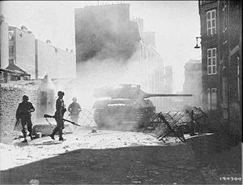
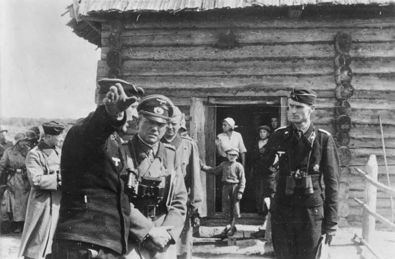
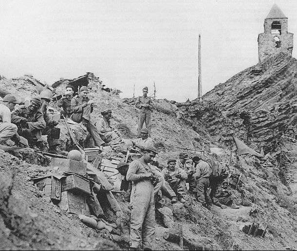

Setembro
Dia 1 : A Alemanha invade a Polônia. Exatamente às 4:34 da manhã três Stukas violam o espaço aéreo polonês em missão de ataque, dando início à Segunda Guerra Mundial.
Dia 3 : Inglaterra, França, Austrália, Índia e Nova Zelândia declaram guerra à Alemanha.
Dia 5 : Os alemães atravessam o Vístula. Os EUA declaram sua neutralidade.
Dia 10 : O Canadá declara guerra à Alemanha.
Dia 13 : O primeiro-ministro francês, Daladier, realiza o primeiro gabinete de guerra.
Dia 17 : A União Soviética invade a fronteira Leste da Polônia.
Dia 18 : Os soviéticos capturam a cidade de Vilnyus.
Dia 22 : Ameaçada a oeste pelos alemães e aleste pelos soviéticos, a cidade de Lvov rende-se.
Dia 27 : Varsóvia - capital da Polônia - é tomada, o governo polonês capitula.
Dia 28 : A fortaleza de Motlin capitula. Ribbentrop e Molotov se reúnem para decidir a partilha da Polônia.
Setembro de 1939Outubro
Dia 6 : Hitler envia um plano de paz a Chamberlain. O primeiro-ministro britânico recusa.
Dia 14 : O submarino alemão U47 afunda o couraçado Royal Oak dentro da base naval de Scapa Flow.
Dia 17 : Retirada francesa do Mosela.
Outubro de 1939Novembro
Dia 4 : EUA aprovam legislação específica de empréstimo aos aliados europeus para obtenção de material bélico.
Dia 7 : EUA declaram as águas em torno da França e Inglaterra como zona de guerra, proibindo a circulação de navios americanos.
Dia 8 : Atentado contra Hitler no Bürger-braükeller de Munique.
Dia 30 : URSS invade a Finlândia.
 Novembro de 1939
Novembro de 1939
Dezembro
Dia 13 : Batalha do Rio da Prata: o encouraçado-de-bolso alemão, Almirante Graf Spee, enfrenta 3 cruzadores britânicos.
Dia 14 : A União Soviética é expulsa da Liga das Nações.
Dia 17 : O Graf Spee é afundado pela sua tripulação no porto de Montevidéu, no Uruguai.
 Dezembro de 1939
Dezembro de 1939
Janeiro
Dia 2 : Os russos iniciam uma ofensiva na Cariléia.
Dia 8 : A ofensiva soviética é repelida pelos finlandeses.
 Janeiro de 1940
Janeiro de 1940
Fevereiro
Dia 15 : Os russos rompem a linha Mannerheim de defesa finlandesa.
Fevereiro de 1940Março
Dia 12 : A Finlândia assina um tratado de paz com a URSS.
Dia 28 : Decisão franco-britânica de não concluírem, separadamente, armistícios ou paz.
Março de 1940Abril
Dia 9 : O exército alemão inicia a ocupação da Dinamarca e invade a Noruega.
Dia 10 : Primeira Batalha Naval de Narvik.
Dia 13 : Segunda batalha naval de Narvik, culminando com a eliminação dos destroyers alemães.
Dia 14 : Desembraque inglês na Noruega, próximo a Narvik.
Dia 19 : Desembarque francês na Noruega.
Dia 24 : Derrota aliada na Noruega, em Lillehammer. Criação do comissariado do Reich para o país.
Abril de 1940Maio
Dia 10 : Alemanha invade a Bélgica, Holanda e Luxemburgo. Neville Chamberlain - Primeiro Ministro Britânico - renuncia, Winston Churchill ocupa o cargo.
Dia 14 : Bombardeio contra a cidade aberta de Rotterdam - 1000 civis mortos, 78.000 desabrigados. Os alemães rompem a frente francesa em Sedan.
Dia 15 : O exército holandês capitula.
Dia 17 : As tropas alemãs entrem em Bruxelas.
Dia 18 : Formado o novo gabinete de Reynauld, com Pétain, Daladier e Mandel.
Dia 19 : Weygand é nomeado Comandante-chefe do exército francês.
Dia 26 : Evacuação da Força Expedicionária Britânica em Dunquerque.
Dia 27 : O rei Leopoldo da Bélgica assina o armistício com a Alemanha.
 Maio de 1940
Maio de 1940
Junho
Dia 3 : Os alemães bombardeiam Paris.
Dia 10 : Capitulação do exército Norueguês. A Itália declara guerra à Inglaterra e França.
Dia 11 : O governo francês refugia-se próximo a Tours. Conferência Churchill-Reynaud-Weygand.
Dia 13 : Paris é decretada cidade aberta.
Dia 14 : O exército alemão marcha sobre Paris.
Dia 18 : Os soviéticos invadem os estados bálticos.
Dia 19 : Os alemães atravessam o Loire. Heróica resistência dos cadetes de Saumur.
Dia 21 : Em Rethondes, Hitler receber os plenipotenciários franceses.
Dia 22 : A França assina o armistício com a Alemanha.
Dia 26 : Ultimato soviético à Romênia.
Dia 30 : O exército alemão inicia a ocupação das ilhas do canal da Mancha.
Junho de 1940Julho
Dia 1 : O governo francês instala-se em Vichy.
Dia 3 : Ataque inglês contra a frota francesa em Orã e Mers-el-Kébir.
Dia 5 : Rompimento das relações diplomáticas entre a França e a Inglaterra.
Dia 10 : Início da Batalha da Inglaterra.
Dia 11 : O Marechal Pétain assume a liderança do Governo de Vichy.
Dia 14 : A Espanha ocupa Tânger com o objetivo de manter a neutralidade da zona.
Dia 16 : Hitler dá a ordem de preparação para a Leão do Mar (invasão da Inglaterra).
 Julho de 1940
Julho de 1940
Agosto
Dia 3 : A Itália inicia a ocupação da Somália Britânica.
Dia 15 : A Luftwaffe intensifica os ataques sobre a Inglaterra.
Dia 29 : O governo de Vichy cria as Legiões Combatentes.
 Agosto de 1940
Agosto de 1940
Setembro
Dia 3 : Primeiras entregas de destroyers americanos à Grã-Bretanha.
Dia 7 : Começo da *blitz* contra a cidade de Londres.
Dia 13 : O exército italiano invade o Egito.
Dia 15 : Ultimato japonês à França pela seção das bases navais da Indochina.
Dia 17 : Adiamento da operação Leão do Mar.
Dia 22 : Assinatura do acordo-franco-japonês para desembarque na Indochina.
Dia 25 : Os Estados Unidos limitam a entrega de petróleo ao Japão.
Dia 27 : Itália, Alemanha e Japão assinam o pacto Tripartite.
Setembro de 1940Outubro
Dia 7 : O exército alemão marcha para a Romênia.
Dia 10 : A Royal Navy bombardeia Cherburgo.
Dia 12 : Vitória da marinha inglesa sobre os italianos ao largo da ilha de Malta.
Dia 23 : Hitler encontra-se com Franco em Hendaia e com Pétain em Montoire, no dia seguinte.
Dia 28 : Itália invade a Grécia.
 Outubro de 1940
Outubro de 1940
Novembro
Dia 5 : Roosevelt é reeleito para mais um mandato.
Dia 8 : Reide da RAF sobre Munique.
Dia 11 : Aviões do porta-aviões britânico Illustrious atacam os navios italianos ancorados em Taranto.
Dia 14 : O exército grego repele os italianos de volta à Albânia.
Dia 20 : A Hungria adere ao pacto Tripartite.
Dia 22 : O 9º Exército Italiano rende-se aos gregos.
Dia 23 : A Romênia adere ao pacto Tripartite.
Novembro de 1940Dezembro
Dia 9 : Primeira ofensiva britânica contra os italianos, dirigido por Wavell.
Dia 11 : Os britânicos capturam Sidi Barrani, no Egito, aos Italianos.
Dia 17 : Os britânicos recapturam Sollum, Egito.
Dia 29 : Violento bombardeio contra Londres: incêndios na cidade.
 Dezembro de 1940
Dezembro de 1940
Janeiro
Dia 5 : Tropas australianas capturam Bardia, na Líbia.
Dia 10 : Na Albânia, os gregos tomam aos italiano Keleyre. Combate naval anglo-italiano no estreito da Sicília.
Dia 19 : Início da ofensiva britânica na Etiópia e Eritréia.
Dia 20 : Hitler emite ordens para o envio da 5ª Divisão Motorizada (Afrika Korps) para a Áfrika.
Dia 22 : Britânicos e australianos capturam Tobruk.
Dia 26 : Princípio da ofensiva britânica na Somália inglesa e italiana.
Janeiro de 1941Fevereiro
Dia 6 : Britânicos e australianos capturam Benghazi.
Dia 9 : Os ingleses bombardeiam Gênova e Livorno.
Dia 12 : O General Rommel chega a Trípoli.
Dia 25 : Tropas britâncias capturam Mogadíscio, na Somália italiana.
Fevereiro de 1941Março
Dia 1 : A Bulgária alia-se ao eixo.
Dia 2 : Os alemães entram na Bulgária.
Dia 11 : Promulgação da lei de empréstimo e arrendamento (lend and lease) nos Estados Unidos.
Dia 16 : Grande reide da Luftwaffe sobre Bristol.
Dia 25 : A Iugoslávia assina o Pacto Tripartite.
Dia 27 : Um golpe de estado derruba o governo iugoslavo, a Iugoslávia deixa o Eixo.
Dia 28 : Vitória naval britânica sobre os italianos no cabo Matapan.
Dia 30 : Em Brest, a RAF ataca os cruzadores alemães Scharnhorst e Gneisenau.
Dia 31 : As tropas Afrika Korps começam a ofensiva a partir de El Agheila.
 Março de 1941Abril
Dia 4 : Os alemães capturam Benghazi.
Dia 6 : Alemanha invade a Iugoslávia e a Grécia. O Afrika Korps toma Zagreb.
Dia 8 : A Luftwaffe bombardeia Belgrado.
Dia 12 : O exército alemão ocupa Belgrado.
Dia 13 : Os soviéticos e japoneses assinam um pacto de não-agressão.
Dia 14 : O Afrika Korps atinge a fronteira egípcia.
Dia 16 : Intenso reide aéreo sobre Londres, repetido a 19 e 20.
Dia 17 : O exército iugoslavo rende-se à Alemanha.
Dia 22 : Os alemães capturam Thessalonika.
Dia 24 : Os gregos rendem-se no Epiro e na Macedônia.
Dia 27 : Tropas alemãs tomam Atenas.
Dia 28 : Os alemães tomam Sollum.
Dia 30 : Retirada das tropas britânicas na Grécia.
Abril de 1941Maio
Dia 2 : Golpe de estado antiinglês no Iraque.
Dia 11 : Rudolf Hess desce na Escócia após seu vôo clandestino.
Dia 12 : Entrevista Hitler-Darlan em Berchtesgarden, os alemães poderão utilizar os campos de pouso Sírios.
Dia 15 : Os britânicos recapturam Sollum e Halfaya.
Dia 20 : Invasão aero-transportada germânica em Creta. Perdas pesadas alemãs apesar da vitória incontestável.
Dia 23 : Aviação alemã ataca a esquadra britânica na Citeréia.
Dia 24 : O Bismark - orgulho da Kriegsmarine - afunda o britânico Hood.
Dia 27 : O Bismarck é afundado pela esquadra de Tovey.
Dia 31 : As forças britânicas em Creta são derrotadas.
Maio de 1941Junho
Dia 2 : Entrevista Hitler-Mussolini no Passo Brenner.
Dia 8 : As forças aliadas invadem a Síria.
Dia 15 : A Croácia adere ao pacto Tripartite.
Dia 18 : Reides da RAF sobre o Ruhr. Tratado germano-turco de não agressão.
Dia 22 : Alemanha, Itália e Romênia declaram guerra à URSS. Início da operação Barbarossa, 170 divisões (3 milhões de homens) invadem a Rússia.
Dia 23 : Hungria e Eslováquia declaram guerra à URSS.
Dia 24 : Os alemães tomam Brest-Litovsk, Kaunas e Wilna.
Dia 26 : Finlândia e Albânia declaram guerra à União Soviética.
Dia 28 : Minsk é capturada por tropas alemães.
Dia 30 : Rompimento das relações diplomáticas entre o governo de Vichy e a URSS
Junho de 1941Julho
Dia 1 : Ofensiva da RAF sobre o Canal da Mancha, Norte da França e Alemanha.
Dia 2 : Vitorioso avanço do Exército Centro (von Bock) na Bielo-Rússia.
Dia 6 : Contra-ataque na Bielo-Rússia.
Dia 10 : Inicia-se a batalha de Smolensk, ofensiva alemã contra Leningrado.
Dia 14 : O governo de Vichy assina a capitulação das forças que lutavam contra a Grã-Bretanha naquele setor.
Dia 15 : Os alemães capturam Smolensk.
Dia 21 : Os russos recuam do Dniéster. Reide da Luftwaffe sobre Moscou.
Dia 24 : O exército japonês ocupa a Indochina francesa. EUA cessam relações comerciais com o Japão.
Dia 29 : Acordo franco-japonês para a defesa em comum da Indochina.
Julho de 1941Agosto
Dia 1 : Contra-ofensiva russa na frente central.
Dia 5 : Os britânicos enviam reforços para Cingapura.
Dia 9 : Conferência Churchill-Roosevelt na Terra Nova. Violentos combates na Ucrânia.
Dia 11 : Ofensiva de von Rundstedt até o Mar Negro. Mobilização geral no Japão.
Dia 12 : Assinatura da carta do Atlântico na Terra Nova.
Dia 16 : Exército alemão captura a Ucrânia. Retirada russa no Dniéper.
Dia 19 : O Exército Norte ataca Leningrado.
Dia 25 : Tropas britânicas e soviéticas invadem o Irã. Começo da batalha de Kiev.
Dia 27 : Atentado contra Laval e Déat em Versalhes.
Dia 28 : Os alemães tomam Dniepropetrovsk.
 Agosto de 1941Setembro
Dia 1 : Os alemães ocupam a Cariléia.
Dia 5 : Exército alemão ocupa a Estônia.
Dia 7 : Grande reide da RAF sobre Berlim.
Dia 8 : As tropas russas conta-atacam e recuperam Ielnia, sudeste de Smolensk.
Dia 9 : Inicia-se o cerco a Leningrado.
Dia 15 : O Exército Centro alemão estabelece contato em Kiev.
Dia 23 : De Gaulle estabele o Comitê Nacional da França Livre, em Londres.
Dia 25 : Ofensiva alemã na Criméia.
Dia 26 : Kiev é capturada pelas forças alemães.
Dia 27 : Fim da resistência italiana na Etiópia.
Setembro de 1941Outubro
Dia 1 : Conferência de Moscou estabelece ajuda americana e inglesa aos russos.
Dia 4 : EUA suspendem a entrega de petróleo ao Japão.
Dia 6 : Primeira ofensiva da Wehrmacht contra Moscou.
Dia 8 : Os alemães tomam Orel, Briansk e Kaluga.
Dia 14 : Rundstedt ocupa Mariupol. Queda de Kalinin.
Dia 16 : Formação do governo Tojo no Japão. Alemães tomam Odessa.
Dia 17 : O governo soviético muda sua sede para Kuibyshev.
Dia 19 : Estado de sítio em Moscou. Jukov assume a defesa da cidade no dia 21.
Dia 24 : Kharkov cai nas mãos do exército alemão.
Outubro de 1941Novembro
Dia 1 : Os alemães avançam na Criméia.
Dia 3 : Alemães capturam Kursk.
Dia 13 : O porta-aviões inglês Ark Royal é afundado próximo a Gibraltar.
Dia 16 : Grande ofensiva alemã contra Moscou (mais de 50 divisões).
Dia 18 : Ofensiva do 8º Exército Inglês na Cirenaica.
Dia 22 : Rostov é capturada pelas forças alemães.
Dia 25 : Nova ofensiva alemã rechaçada em Moscou.
Dia 26 : Catroux proclama a independência do Líbano.
Dia 29 : Os russos recapturam Rostov.
Novembro de 1941Dezembro
Dia 1 : Três Exércitos russo-asiáticos chegam para reforçar a frente de Moscou.
Dia 6 : Os alemães estacionam seu assalto à capital russa. Contra-ofensiva russa em toda a frente.
Dia 7 : O Japão ataca a frota americana estacionada em Pearl Harbor e declara guerra aos Estados Unidos e Grã-Bretanha.
Dia 7 : Forças japonesas atacam a Tailândia, o Sião e a Malásia.
Dia 8 : Estados Unidos e Grã-Bretanha declaram guerra ao Japão imperial.
Dia 9 : O Repulse e o Prince of Wales são afundados pelos japoneses.
Dia 10 : Desembarque japonês em Luzon (Filipinas). Os britânicos recapturam Tobruk.
Dia 11 : Alemanha e Itália declaram guerra aos Estados Unidos.
Dia 12 : Começa a evacuação de Moscou.
Dia 13 : Os japoneses ocupam Guam, nas Marianas.
Dia 16 : O Exército Vermelho reconquista Kalinin.
Dia 17 : Forças japonesas desembarcam em Bornéu.
Dia 17 : Primeira batalha de Sirte, a frota italiana é repelida por forças leves britânicas.
Dia 18 : Os aliados invadem Timor.
Dia 19 : Hitler assume o comando da frente leste de von Brauchitsch. Italianos atacam o Queen Elizabeth e Valiant.
Dia 23 : Os japoneses tomam a ilha de Wake.
Dia 24 : Britânicos recuperam Benghazi, Rommel retira-se da Cirenaica.
Dia 25 : Queda de Hong Kong.
Dia 29 : Os russos desembarcam na Criméia e recuperam Kerch.
 Dezembro de 1941
Dezembro de 1941
Janeiro
Dia 1 : Contra-ataque dos exércitos soviéticos em toda a extensão da frente.
Dia 2 : Os japoneses capturam Manila.
Dia 3 : Wavell é nomeado comandante-em-chefe das Forças Aliadas no Pacífico.
Dia 11 : Os britânicos retomam Sollum. Os japoneses tomam Kuala Lumpur.
Dia 13 : Soviéticos recapturam Kiev em sua ofensiva de inverno.
Dia 21 : Contra-ofensiva de Rommel no norte da África.
Dia 22 : Fim da batalha de Moscou: retirada geral das linhas alemãs à oeste da capital. Japoneses desembarcam no arquipélago de Bismarck.
Dia 25 : Desembarque japonês nas Ilhas Salomão. Rommel reconquista Benghazi.
Dia 28 : Sob pressão americana, o Brasil rompe relações diplomáticas e comerciais com Alemanha, Japão e Itália.
Dia 31 : Começa o cerco de Cingapura pelas forças nipônicas.
Janeiro de 1942Fevereiro
Dia 1 : Retirada inglesa até Ain-el-Gazela, na Cirenaica.
Dia 2 : Bombardeiros japoneses atacam Java.
Dia 14 : O Gneisenau, o Scharnhorst e o Prinz Eugen forçam a passagem de Calais e chegam à Noruega.
Dia 15 : A força britânica em Cingapura capitula.
Dia 19 : Início dos processos contra os ex-líderes franceses. Japoneses invadem Bali e Timor.
Dia 24 : Os russos cercam as tropas de von Busch em Staraya Russa: a batalha dura dez dias.
Dia 27 : Batalha naval do Mar de Java.
Fevereiro de 1942Março
Dia 1 : Ofensiva russa na Criméia.
Dia 8 : Os japoneses entram em Rangoon.
Dia 17 : MacArthur, nomeado comandante-chefe das forças aliadas no Pacífico, chega à Austrália.
Dia 28 : Reide britânico sobre Saint-Nazaire.
Março de 1942Abril
Dia 5 : Aviação japonesa bombardeia o Ceilão.
Dia 7 : Capitulação das forças aliadas em Samatra.
Dia 9 : As forças americanas em Bataan rendem-se aos japoneses.
Dia 17 : Demissão do governo Darlan em Vichy.
Dia 18 : Tóquio é bombardeada por bombardeiros americanos (o reide de Doolittle).
Dia 18 : Laval sobe ao poder na França. Aviação americana ataca Tóquio, Yokohama, Nagoya e Kobe.
Dia 20 : Fuga do General Giraud. Avanço japonês na Birmânia.
Abril de 1942Maio
Dia 1 : Entrevista Hitler-Mussolini em Salzburgo.
Dia 6 : Os britânicos capturam Madagascar.
Dia 6 : Rendição incondicional de todas as forças americanas nas Filipinas. Cessam as hostilidades.
Dia 8 : Nova ofensiva alemã na Criméia.
Dia 8 : Batalha aeronaval do Mar de Coral, primeira batalha travada somente entre porta-aviões.
Dia 15 : Retirada inglesa na Birmânia, até a fronteira da Índia.
Dia 16 : Os alemães retomam Kerch, na Criméia.
Dia 26 : Assinatura do tratado anglo-soviético, com duração de 20 anos.
Dia 26 : Rommel retoma a ofensiva na Líbia, inicia-se o ataque a Bir Hakim.
Dia 27 : Atentado contra Heydrich, em Praga. Ele morre a 4 de junho.
Dia 28 : Os russos retomam Kharkov aos alemães.
Dia 30 : Primeiro dos reides de 1000 aviões britânicos.
Maio de 1942Junho
Dia 1 : Reide da RAF sobre o Rhur.
Dia 3 : Violento ataque alemão contra Sebastopol.
Dia 4 : Batalha de Midway - 4 porta-aviões japoneses são afundados.
Dia 10 : Contra-ofensiva alemã em Kharkov.
Dia 11 : EUA extendem a política de Lend and Lease à URSS.
Dia 11 : As forças dos Franceses Livres evacuam Bir Hakim.
Dia 14 : Retirada britânica para o Egito. São afundados 15 navios ingleses de um comboio para Malta.
Dia 18 : Entrevista Roosevelt-Churchill em Washington.
Dia 21 : Rommel apodera-se de Tobruk.
Dia 22 : Ofensiva alemã na Ucrânia.
Dia 22 : O AfrikaKorps cruza a fronteira egípcia.
Dia 24 : De Gaulle acerta acordo com os movimentos de resistência franceses.
Dia 25 : Recuo dos russos em Kharkov.
Dia 27 : Acordo de empréstimo entre a Grã-Bretanha e a Rússia.
Dia 28 : Ofensiva alemã de primavera em toda a frente russa.
Dia 30 : Rommel chega a El Alamein.
Junho de 1942Julho
Dia 3 : O exército alemão captura a cidade de Sebastopol.
Julho de 1942Agosto
Dia 7 : Primeiras tropas americanas desembarcam em Guadalcanal.
Dia 15 : Cargueiro Baependy é afundado nas costas do Brasil pelo submarino U-507, com grande perda de vidas - este e outros ataques nos dias seguintes, acabam por levar o Brasil à guerra.
Dia 19 : Os canadenses tentam desembarcar em Dieppe mas são repelidos pelas forças alemães.
Dia 22 : O Brasil declara guerra à Alemanha e Itália.
Dia 23 : Início dos ataques aéreos à cidade de Stalingrado, primeiras unidades alemãs se aproximam da cidade.
Dia 31 : Batalha de Alam Halfa.
Agosto de 1942Setembro
Dia 13 : Início da Batalha de Stalingrado.
Setembro de 1942Outubro
Dia 23 : Inicia-se a batalha de El Alamein.
Outubro de 1942Novembro
Dia 8 : Início da operação Tocha. Forças Anglo-americanas desembarcam no noroeste da África francesa (sob governo de Vichy).
Dia 11 : Forças alemães entram na França não ocupada.
Dia 19 : Contra-ofensiva em Stalingrado.
Dia 27 : A frota francesa é posta a pique em Tulon.
Novembro de 1942Dezembro
Dia 12 : Os alemães tentam, sem sucesso, romper o cerco em Stalingrado.
Dezembro de 1942Janeiro
Dia 14 : Conferência aliada em Casablanca. Líderes decidem por rendição incondicional.
Dia 28 : O 8º exército britânico captura Tripoli.
Dia 31 : O 6º exército alemão (Von Paulus) rende-se no bolsão de Stalingrado. A ocasião marca o ponto de virada da guerra na Rússia.
Dia 31 : Batalha do Mar de Barents, a marinha alemã é humilhada, levando Hitler a ordenar a destruição de todos os navios de superfície alemães.
Janeiro de 1943Fevereiro
Dia 8 : Em oito dias (até o dia 16) os soviéticos recapturam Kursk, Rostov e Kharkov.
Fevereiro de 1943Março
Dia 15 : Forças alemães retomam Kharkov.
Março de 1943Maio
Dia 12 : Rendição do Afrika Korps no Norte da África
Maio de 1943Junho
Dia 13 : Os últimos bolsões de resistência alemã no Norte da África são derrotados.
Dia 22 : Os U-boats alemães são retirados do Atlântico Norte, encerrando a batalha do Atlântico.
Junho de 1943Julho
Dia 5 : Ocorre a maior batalha de blindados da história em Kursk, na Rússia.
Dia 10 : Operação Husky - os aliados desembarcam na Sicília.
Dia 25 : O governo fascista de Mussolini é derrubado.
Dia 26 : O Marechal Badoglio declara lei marcial na Itália.
Julho de 1943Agosto
Dia 23 : Forças soviéticas recapturam Kharkov.
Agosto de 1943Setembro
Dia 3 : A Itália assina o armistício com os aliados.
Dia 10 : Exércitos alemães ocupam Roma.
Dia 12 : Mussolini é resgatado em uma ousada ação do coronel Otto Skorzeny.
Dia 22 : Submarinos anões britânicos atacam o couraçado Tirpitz no fiorde de Kaa, Noruega.
Dia 23 : Mussolini declara um Estado fascista no norte da Itália.
Dia 25 : Sovéticos retomam Smolensk.
Setembro de 1943Outubro
Dia 13 : O governo oficial da Itália declara guerra à Alemanha.
Outubro de 1943Novembro
Dia 6 : Soviéticos recapturam Kiev.
Dia 20 : Os marines americanos desembarcam em Tarawa.
 Novembro de 1943
Novembro de 1943
Dezembro
Dia 26 : O cruzador de batalha Scharnhost é afundado pela frota britânica.
Dezembro de 1943Janeiro
Dia 6 : Exércitos soviéticos avançam na fronteira polonesa.
Dia 16 : Eisenhower é apontado como o Comandante Supremo das forças aliadas na Europa.
Dia 22 : Desembarques aliados em Anzio.
Dia 27 : Termina o cerco de Leningrado.
Dia 31 : Forças americanas invadem as ilhas Marshall.
Janeiro de 1944Março
Dia 19 : A Hungria é ocupada por forças alemãs.
Março de 1944Abril
Dia 3 : Operação Tingstênio: aviões da Fleet Air Arm, danificam o couraçado Tirpitz no fiorde de Kaa.
Dia 10 : Soviéticos capturam Odessa.
Abril de 1944Maio
Dia 9 : Sevastopol é tomada pelas forças soviéticas.
Maio de 1944Junho
Dia 4 : Roma é capturada pelos aliados.
Dia 6 : É lançada a operação Netuno (Overlord), a invasão aliada da Normandia.
Dia 13 : As primeiras bombas V-1 explodem na Inglaterra.
Dia 15 : As forças americanas desembarcam em Saipan, nas Marianas.
Dia 19 : Batalha naval do mar das Filipinas.
Dia 22 : Os soviéticos lançam a ofensiva que destruíra o Grupo de Exércitos Centro
Dia 27 : Os exércitos aliados capturam Cherburgo.
Junho de 1944Julho
Dia 3 : Forças soviéticas recapturam Minsk.
Dia 7 : O exército do Japão é derrotado em Saipan.
Dia 9 : Os aliados capturam Caen.
Dia 20 : Atentado contra a vida de Adolf Hitler. O Führer sobrevive.
Dia 21 : Desembarques americanos em Guam.
Dia 25 : Início da operação Cobra - os aliados avançam além da Normandia.
Dia 28 : Soviéticos tomam Brest-Litovsk.
Julho de 1944Agosto
Dia 4 : Os aliados libertam Florença.
Dia 15 : Operação Anvil - aliados desembarcam no sul da França.
Dia 15 : Tropas canadenses capturam a cidade de Falaise, na França
Dia 24 : Operação Goodwood III: novo ataque e danos ao Tirpitz pela Fleet Air Arm.
Dia 25 : Paris é libertada pelas forças aliadas.
Dia 28 : Liberação de Marseilles e Toulon.
Dia 30 : Exército alemão abandona a Bulgária.
Dia 31 : Os soviéticos capturam Bucareste.
Agosto de 1944Setembro
Dia 3 : A Antuérpia é tomada pelos aliados.
Dia 5 : A URSS declara guerra à Bulgaria.
Dia 8 : A primeira bomba voadora V-2 explode em Londres.
Dia 17 : Operação Market Garden - Assalto aero-transportado não obtém sucesso na Holanda.
Dia 24 : San Marino declara guerra a Alemanha, tendo sido invadida pela Alemanha no ano anterior, para captura de 100.000 refugiados lá.
Dia 26 : A Estonia é ocupada pelo Exército Vermelho.
Dia 28 : Liberação de Calais.
Setembro de 1944Outubro
Dia 1 : Os soviéticos invadem a Iugoslávia.
Dia 4 : Aliados desembarcam na Grécia.
Dia 14 : Atenas é recapturada pelas forças aliadas.
Dia 20 : Belgrado é invadida.
Dia 20 : Marines americanos desembarcam em Leyte, nas Filipinas.
Dia 23 : Os soviéticos entram no leste da Prússia.
Dia 23 : Batalha do Golfo de Leyte. A maior batalha naval da história. O poderio aero-naval japonês é dizimado.
Outubro de 1944Novembro
Dia 4 : Rendição das forças do eixo na Grécia.
Dia 12 : Bombardeiros Lancasters, carregando bombas Tallboy, afundam o couraçado Tirpitz.
Dia 24 : Tropas francesas capturam Strasburgo.
Novembro de 1944Dezembro
Dia 16 : Os alemães lançam uma ofensiva através das Ardenas - A Batalha das Ardenas inicia-se.
Dia 26 : Tropas americanas resistem em Bastogne. A ofensiva alemã é detida.
 Dezembro de 1944
Dezembro de 1944
Janeiro
Dia 1 : Os alemães retiram-se das Ardenas.
Dia 9 : Forças americanas desembarcam em Luzon, nas Filipinas.
Dia 16 : O bolsão alemão nas Ardenas é eliminado.
Dia 17 : O Exército Vermelho captura Varsóvia.
Dia 26 : Os japoneses retiram-se da costa chinesa.
Janeiro de 1945Fevereiro
Dia 4 : Conferência de Yalta.
Dia 4 : Manila é retomada.
Dia 19 : Desembarques americanos em Iwo Jima.
Dia 20 : Os soviéticos capturam Danzig.
Dia 21 : Tomada de Monte Castelo por tropas brasileiras.
 Fevereiro de 1945Março
Dia 7 : Os aliados cruzam o Reno, utilizando a ponte de Remagen.
Dia 19 : Tóquio é atacada com bombas incendiárias por B-29s. Centenas de milhares perecem.
Março de 1945Abril
Dia 1 : Estados Unidos invadem Okinawa.
Dia 10 : Hanover cai em mãos aliadas.
Dia 11 : Soviéticos e iugoslavos assinam pacto.
Dia 12 : Morre o presidente americano Roosevelt. Truman assume o cargo.
Dia 13 : Os soviéticos capturam Viena.
Dia 15 : Forças aliadas capturam Arnhem.
Dia 20 : Nuremberg é capturada pelos aliados.
Dia 23 : Os soviéticos entram em Berlim.
Dia 25 : Forças russas e americanas encontram-se ao largo do rio Elba.
Dia 28 : Mussolini, o Duce, é capturado por guerrilheiros e assassinado.
Dia 28 : A 148ª Divisão Alemã rende-se para a FEB
Dia 30 : Adolf Hitler comete suicídio.
 Abril de 1945
Abril de 1945
Maio
Dia 2 : As forças alemães na Itália rendem-se.
Dia 4 : As forças alemães na Holanda, Dinamarca e noroeste da Alemanha rendem-se.
Dia 5 : Cessar-fogo no front ocidental.
Dia 7 : A Alemanha rende-se incondicionalmente às forças aliadas e russas.
Dia 9 : Exército Vermelho ocupa Praga.
Dia 9 : As ilhas do canal são liberadas.
 Maio de 1945
Maio de 1945
Junho
Dia 10 : Os australianos invadem o Bornéo.
Dia 22 : Forças americanas capturam Okinawa.
Junho de 1945Agosto
Dia 5 : Desembarques britânicos em Cingapura.
Dia 6 : A primeira bomba atômica é detonada sobre Hiroshima pelo B-29 Enola Gay.
Dia 8 : URSS declara guerra ao Japão.
Dia 9 : A segunda bomba atômica, lançada pelo B-29 Bock`s Car, explode sobre Nagasaki.
Dia 14 : O Japão rende-se incondicionalmente.
 Agosto de 1945
Agosto de 1945
Setembro
Dia 7 : Os últimos bolsões japoneses rendem-se na China, Birmânia e Hong Kong, determinando o fim da Segunda Guerra Mundial após mais de 6 anos de conflito.
Setembro de 1945